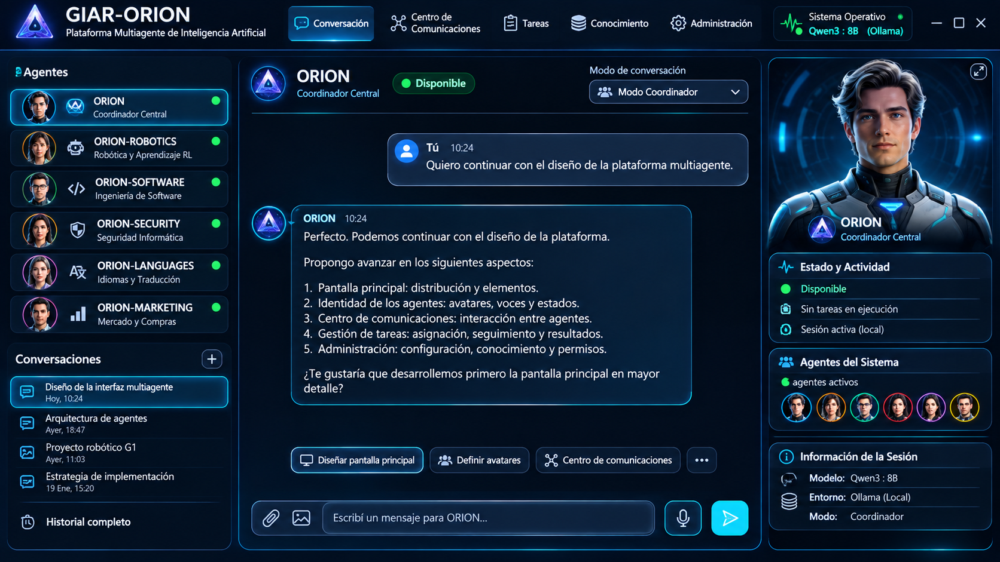

Código: GIAR-ORION-DES-001
Versión: 0.7
Fecha: 11/11/2026
Estado: Borrador consolidado para revisión
Alcance: Diseño funcional conceptual de los módulos 1 a
24.
| Versión | Fecha | Cambios | Estado |
|---|---|---|---|
| 0.1 | 10/11/2026 | Consolidación inicial de decisiones conversadas para los módulos 1–24; identificación de pendientes y propuestas no aprobadas. | Borrador |
| 0.2 | 10/11/2026 | Ajustes exclusivamente estéticos y de presentación; sin cambios en el contenido funcional. | Revisión de presentación |
| 0.3 | 10/11/2026 | Nuevos ajustes exclusivamente estéticos y de presentación; sin cambios en el contenido funcional. | Revisión de presentación |
| 0.4 | 11/11/2026 | Incorporación de la primera especificación funcional aprobada de ORION CORE: diez componentes, doce decisiones y criterios transversales. | Borrador consolidado para revisión; ORION CORE aprobado funcionalmente, diseño técnico e implementación pendientes |
| 0.5 | 11/11/2026 | Incorporación de la especificación funcional del Módulo 20, diez componentes, decisiones, contratos, flujos, requisitos, auditorías y pendientes técnicos. | M20 aprobado funcionalmente en el alcance documentado; diseño técnico e implementación pendientes |
| 0.6 | 11/11/2026 | Recuperación de antecedentes históricos de la v0.4 omitidos en la v0.5; conservación íntegra de la ampliación funcional del Módulo 20; restitución del formato de tablas de la v0.4. | Borrador consolidado para revisión |
| 0.7 | 11/11/2026 | Se incorpora la secuencia de desarrollo acordada: primero plataforma e interfaz general; después adaptación e integración de ORION-ROBOTICS; otros agentes solo ante necesidad justificada. M20 pasa a STAND-BY, preservando su especificación y diseño existente. | Borrador consolidado para revisión |
Este documento registra diseño conceptual. No afirma que exista código, estructura de carpetas o funcionalidad implementada.
GIAR-ORION se concibe como una plataforma local multiagente para investigación, desarrollo, robótica, software, seguridad, idiomas, mercado y futuras especialidades. ORION coordina agentes, tareas, permisos, recursos, proyectos, evidencias y resultados.
| Agente | Responsabilidad |
|---|---|
| ORION | Coordinador central, políticas, asignación, permisos, supervisión y consolidación. |
| ORION-ROBOTICS | Robótica, simulación, RL, investigación y desarrollo. |
| ORION-SOFTWARE | Programación e ingeniería de software. |
| ORION-SECURITY | Seguridad informática y análisis de amenazas. |
| ORION-LANGUAGES | Traducción, interpretación y enseñanza de idiomas. |
| ORION-MARKETING | Investigación de mercado, proveedores, productos, comparaciones y costos. |
Cada agente tiene identidad y contexto propios. La inferencia LLM y otros servicios compartidos se administran centralmente.
Los agentes pueden comunicarse directamente en tareas permitidas. ORION interviene en asignación, prioridades, permisos, operaciones sensibles, conflictos y consolidación. Los desacuerdos deben hacerse visibles; no se convierten opiniones en evidencias.
| Elemento | Referencia conocida |
|---|---|
| SO actual | Windows 11 |
| SO futuro | Ubuntu |
| GPU actual | NVIDIA RTX 5070 Laptop, 8 GB VRAM |
| Runtime local | Ollama |
| Modelo de referencia | Qwen3:8B |
| Conectividad | Local/offline, Internet opcional |
| Red local | Puede conectar computadora y celular |
| Escalabilidad | Varias GPU en el futuro |
Este contexto no limita el diseño a ese hardware.
| Versión | Cambios realizados | Estado | Próximo trabajo |
|---|---|---|---|
| 0.1 | Primera especificación funcional de ORION CORE: diez componentes y doce decisiones aprobadas. | Aprobado funcionalmente; diseño técnico e implementación pendientes. | Definir arquitectura interna, contratos, esquemas de datos, políticas operativas y pruebas. |
ORION CORE constituye el núcleo de coordinación y operación de GIAR-ORION. Proporciona los servicios fundamentales para iniciar y cerrar la plataforma, identificar agentes, recibir y distribuir solicitudes, coordinar tareas, comunicarse con el Model Manager, administrar estados, registrar eventos, aplicar permisos, conservar el estado operativo y ofrecer interfaces estables a los módulos presentes y futuros.
ORION CORE no reemplaza a los gestores especializados. Coordina sus interacciones y aplica las políticas comunes; la recuperación documental, memoria, razonamiento, validación, investigación, ejecución de herramientas y otras funciones específicas permanecen en sus módulos correspondientes.
Las siguientes doce decisiones constituyen el alcance funcional aprobado para la primera versión. Su aprobación no implica selección de tecnologías, diseño técnico detallado, código implementado ni pruebas superadas.
ORION-CORE-001 — Inicialización y cierre inteligentes. El ciclo de vida de la plataforma deberá contemplar el orden de inicio y cierre de sus componentes y servicios, considerando dependencias y estado operativo. El cierre debe ser controlado y evitar presentar como finalizadas tareas que hayan quedado interrumpidas.
ORION-CORE-002 — Registro e identificación híbridos de agentes. La plataforma contará con un mecanismo central de registro e identificación. La incorporación de agentes podrá realizarse de forma manual y mediante mecanismos automáticos controlados; el registro deberá permitir reconocer al agente y consultar su condición operativa.
ORION-CORE-003 — Recepción y distribución inteligente de solicitudes. Las solicitudes se recibirán en un punto de coordinación y se derivarán según su naturaleza, especialidad requerida y condiciones de operación. La distribución deberá considerar la disponibilidad y habilitación del agente, sus permisos, herramientas y recursos.
ORION-CORE-004 — Coordinación híbrida de tareas. ORION CORE coordinará tareas centralmente, permitiendo que los agentes colaboren directamente cuando esté permitido. La coordinación deberá contemplar dependencias, seguimiento y escalamiento de situaciones que requieran intervención de ORION o del usuario.
ORION-CORE-005 — Comunicación con Model Manager centralizado. Los agentes solicitarán inferencia mediante una API interna común. El Model Manager administrará centralmente los modelos y sus recursos; el diseño deberá permitir operación local/offline y evitar instancias duplicadas innecesarias.
ORION-CORE-006 — Gestión jerárquica de estados. Los estados se organizarán en niveles coherentes para plataforma, agentes y tareas. Los cambios deberán ser consistentes, trazables y compatibles con la recuperación de operaciones.
ORION-CORE-007 — Registro configurable de eventos y errores. Se contemplan niveles de registro resumido, intermedio y completo. La configuración del detalle visible/operativo no deberá desactivar la auditoría de eventos críticos ni eliminar la trazabilidad necesaria.
ORION-CORE-008 — Control híbrido de permisos. Los permisos se verificarán antes de ejecutar operaciones. Se combinarán políticas centrales de ORION con permisos específicos por agente, tarea o recurso; las operaciones sensibles requerirán autorización según su riesgo. Las autorizaciones y decisiones de acceso deberán quedar registradas.
ORION-CORE-009 — Persistencia inteligente. La plataforma conservará el estado necesario para continuar o recuperar tareas y servicios. La recuperación deberá comprobar integridad y consistencia, reanudando solo desde estados válidos; si el estado no es confiable, deberá detener la reanudación automática y escalar el caso.
ORION-CORE-010 — Arquitectura híbrida y modular. ORION CORE combinará coordinación central de las funciones comunes con componentes modulares e independientes. Los módulos se integrarán mediante contratos estables, preservando independencia funcional y evitando acoplamiento innecesario.
ORION-CORE-011 — Coordinación sujeta a disponibilidad y recursos. La asignación y continuidad de solicitudes/tareas deberá considerar elegibilidad de agentes, disponibilidad de herramientas y recursos, dependencias y posibles conflictos. Si no existen condiciones suficientes, la solicitud deberá quedar en espera, reencaminarse o escalarse según corresponda, sin forzar una ejecución inválida.
ORION-CORE-012 — Trazabilidad y recuperación auditables. Los cambios relevantes de estado, asignaciones, autorizaciones, eventos y recuperaciones deberán conservar trazabilidad. Los registros podrán configurarse por nivel, pero deberán preservarse los datos críticos para auditoría, diagnóstico y recuperación.
ORION CORE depende de Model Manager para inferencia; Task/Resource Manager para planificación y disponibilidad de recursos; Administration & Configuration Manager para configuración y políticas administrativas; Security Core para controles de seguridad; Session/Recovery y Backup & Recovery para persistencia y recuperación; y los módulos especializados para sus funciones de dominio. Los contratos concretos y límites de responsabilidad se definirán en la arquitectura técnica.
Cada módulo incluye historial de versiones al comienzo. La versión 0.1 indica consolidación funcional inicial, no implementación. La columna “Próximo trabajo” señala la siguiente actividad de diseño o ingeniería.
| Versión | Cambios realizados | Estado | Próximo trabajo |
|---|---|---|---|
| 0.1 | Aprobada línea visual profesional tecnológica + futurista; tema grafito/azul, acentos cian/violeta; panel agentes, chat central, avatar/actividad, barra superior y entrada texto/voz. | Aprobado funcionalmente | Especificar pantallas, navegación, componentes y comportamiento responsive. |
Objetivo y detalles - Interfaz principal para usuario, ORION y agentes. - Panel izquierdo: agentes; centro: conversación; panel derecho: avatar 3D, identidad y actividad. - Barra superior: navegación, estado general e indicador móvil. - Seis agentes iniciales visibles y seleccionables. - Estados: disponible, ocupado, comunicándose, desconectado, deshabilitado y error. - Accesos: comunicaciones, tareas, conocimiento, administración, proyectos y reportes. - Niveles de visualización: - Desarrollo: intervenciones, comunicaciones, resultados y procesos. - Intermedio: agentes, tareas y avances principales. - Producción: respuesta final principalmente. - Ocultar informes no desactiva logs ni auditoría. - Indicador móvil: gris (no habilitado/no vinculado), verde (conectado), amarillo (habilitado pero desconectado), rojo (error). Al abrirlo: estado, dispositivo, Wi-Fi, última comunicación, habilitar/deshabilitar y vincular. - Pendiente: resolución, accesibilidad, navegación completa y especificación visual definitiva.
La siguiente captura se incorpora como referencia visual del diseño consensuado para la interfaz principal de GIAR-ORION. Debe conservarse como referencia durante la implementación; no implica que la interfaz ya esté programada.

Criterios visuales representados - Barra superior: identidad GIAR-ORION, navegación principal y estado del sistema/modelo. - Panel izquierdo: listado de los seis agentes iniciales, identidad, especialidad y estado; debajo, conversaciones e historial. - Área central: agente o conversación activa, selector de modo (Coordinador, agente directo o colaborativo), mensajes y accesos contextuales. - Panel derecho: avatar del agente activo, estado y actividad, agentes del sistema e información de sesión. - Zona inferior: adjuntos, entrada de texto, activación de voz y envío. - Estética: tema oscuro grafito/azul, acentos cian y azul eléctrico, componentes delimitados y jerarquía visual tecnológica/futurista.
Alcance de la referencia: la imagen es una propuesta visual de referencia, no una especificación pixel-perfect ni evidencia de una interfaz funcional. La distribución y los elementos consensuados deben guiar el diseño responsive para escritorio y su adaptación a móvil.
Prototipo interactivo (iframe): queda previsto
incorporar aquí el prototipo navegable. En esta actualización no se
recibió una URL pública/local ni el código iframe; por lo
tanto, no se inserta un marco vacío ni se inventa un destino. Cuando se
disponga del enlace o del código de inserción, se agregará en esta
sección.
| Versión | Cambios realizados | Estado | Próximo trabajo |
|---|---|---|---|
| 0.1 | Centro con lista de agentes/grupos, conversación y detalles; tipos consulta, colaboración, transferencia y supervisión; registro. | Aprobado funcionalmente | Definir protocolo, estados, persistencia, búsqueda y adjuntos. |
Detalles - Comunicaciones iniciadas por ORION, agente autorizado o usuario. - Modelo híbrido: comunicación directa permitida entre agentes, con supervisión central de ORION. - Los archivos compartidos no entran automáticamente al RAG; pasan por Knowledge Manager. - Registro mínimo: ID conversación, emisor/receptor, fecha, motivo, mensajes, archivos, tarea y resultado. - Pendiente: mensajería síncrona/asíncrona, colas, reintentos, retención y contratos de comunicación.
| Versión | Cambios realizados | Estado | Próximo trabajo |
|---|---|---|---|
| 0.1 | Gestión coordinada de tareas, recursos e inferencia; no duplicar innecesariamente Qwen3 por agente. | Aprobado funcionalmente | Definir contratos, colas, prioridades, concurrencia y métricas. |
Detalles - Task Manager: tareas, dependencias, prioridad, progreso, estado, cancelación, suspensión y reanudación. - Resource Manager: CPU, RAM, GPU, VRAM, disponibilidad y ejecuciones. - Model Manager: modelos, instancias/servicios de inferencia, solicitudes, concurrencia y versiones. - Diferenciar concurrencia de agentes/tareas de concurrencia de inferencia. - Una GPU inicialmente; varias en el futuro. Los agentes solicitan recursos a los managers y no dependen de hardware concreto. - Ante falta de recursos, ordenar prioridades/colas, informar al usuario y permitir intervención. - Panel: GPU, VRAM, CPU, RAM, modelos activos, cola y ejecuciones. - Pendiente: planificación, cuotas, límites por usuario/proyecto y políticas de memoria GPU.
| Versión | Cambios realizados | Estado | Próximo trabajo |
|---|---|---|---|
| 0.1 | Bibliotecas privadas, compartidas y globales; permisos granulares; pipeline documental; evaluación de recuperación. | Aprobado funcionalmente | Definir esquema, motor vectorial, pipeline, índices y pruebas. |
Detalles - Bibliotecas privadas por agente, compartidas y globales. - Acceso libre a biblioteca propia; autorización para bibliotecas privadas ajenas; permisos en compartidas/globales. - Permisos: READ, WRITE, UPDATE, DELETE, SHARE; posibilidad de permisos temporales por proyecto. - Ingesta: validación, extracción, normalización, chunking, embeddings, indexación, pruebas y validación. - Estados: pendiente, validando, procesando, indexando, indexado, indexado con advertencias, error, desactualizado. - Agentes pueden proponer conocimiento; bandeja de revisión; incorporación permanente autorizada por usuario o política. - Originales separados de índices; referencias cuando sea posible. - Pruebas RAG: relevancia, precisión de fragmentos, cobertura, recuperación crítica, latencia y comparación de versiones. - Distinguir errores RAG de generación LLM. - UI: bibliotecas, documentos, procesamiento, validación y propuestas. - Pendiente: búsqueda híbrida, reranking, metadatos, versionado y métricas.
| Versión | Cambios realizados | Estado | Próximo trabajo |
|---|---|---|---|
| 0.1 | Modelo híbrido de guardado; cuatro tipos de memoria; memoria privada/compartida y separación de Knowledge. | Aprobado funcionalmente | Definir ciclo de vida, recuperación, consolidación, contradicciones y permisos. |
Detalles - Working: tarea actual. - Episodic:
experiencias. - Semantic: hechos, relaciones y conclusiones. -
Procedural: métodos y procedimientos. - Memoria privada por agente y
compartida. - Knowledge/ es biblioteca documental/RAG;
Memory/ es memoria experiencial/operativa. - Memory
Retriever separado de Knowledge Retriever; pueden combinarse, con
fuentes y evaluaciones diferenciadas. - Estructura conceptual:
Memory/Working, Episodic,
Semantic, Procedural, Indexes;
Knowledge/Documents, Embeddings,
Indexes, Metadata. - Memoria no modifica
automáticamente pesos del LLM ni equivale a entrenamiento. - Metadatos:
origen, confiabilidad, referencias a tareas/documentos/experimentos;
detectar duplicados/contradicciones, archivar, versionar, buscar y
borrar con permisos. - Guardado automático de recuerdos operativos de
bajo riesgo; conclusiones permanentes, procedimientos y memoria
compartida requieren validación según políticas. - Pendiente: esquema,
confianza, caducidad, consolidación, privacidad y pruebas.
| Versión | Cambios realizados | Estado | Próximo trabajo |
|---|---|---|---|
| 0.1 | Arquitectura híbrida con herramientas consolidadas y núcleo propio de supervisión/correlación; Windows y Ubuntu. | Aprobado funcionalmente | Definir amenazas, adaptadores, telemetría, respuesta y autorizaciones. |
Detalles - Núcleo ORION SECURITY CORE común y adaptadores por SO. - Windows: Defender/API, firewall, Event Logs (candidatos). - Ubuntu: ClamAV u otras herramientas, firewall, journald, auditd (candidatos). - ORION-SECURITY analiza; el núcleo aplica políticas. No delegar toda la seguridad al agente. - Amenazas: intrusiones, malware, virus, ransomware, troyanos, spyware, phishing, IP/dominios sospechosos, escaneo de puertos, ataques de red, procesos/servicios, startup, cambios de archivos y puertos. - Respuestas: informativo, advertencia, alto, crítico. - Evitar borrar archivos o detener procesos sin validación; contención automática solo con políticas explícitas. - Offline: análisis local y firmas disponibles; inteligencia online opcional. - Perfiles Normal/Alto/Crítico fueron propuestos, no formalmente aprobados. - No prometer detección total ni reemplazo del antivirus del SO. - Pendiente: matriz de riesgo, contención, telemetría, privacidad, pruebas y perfiles.
| Versión | Cambios realizados | Estado | Próximo trabajo |
|---|---|---|---|
| 0.1 | Avatares 3D interactivos; STT/TTS; voces por agente; servicios compartidos y estados visuales reales. | Aprobado funcionalmente | Comparar tecnologías, latencia, calidad, consumo y compatibilidad. |
Detalles - STT, TTS, push-to-talk, conversación continua, VAD e interrupción de TTS. - Voz propia por agente. - Avatar humanoide 3D con lip-sync, parpadeo, cabeza, mirada, expresiones y gestos discretos. - El avatar refleja estados reales: escuchando, procesando, hablando, comunicándose y error. - Componentes separados: Agent (lógica), Voice Engine (STT/TTS), Avatar Engine (visual/animación). - STT/TTS compartidos cuando sea conveniente. - Candidatos: Whisper, Piper/Kokoro, Three.js, VAD y WebSocket; aún no seleccionados. - Windows, Ubuntu y móvil; escritorio completo y versión móvil adaptada. - Resource Manager controla CPU/GPU. - Pendiente: pruebas de calidad, latencia, consumo, licencias y offline.
| Versión | Cambios realizados | Estado | Próximo trabajo |
|---|---|---|---|
| 0.1 | Modelo híbrido; línea base aprobada; cambios importantes sujetos a aprobación; tareas, dependencias, versiones y estructura de proyecto. | Aprobado funcionalmente | Definir ciclo, esquema, Git, aprobaciones y flujos. |
Detalles - ORION planifica/reorganiza dentro de
objetivos y permisos. - Aprobación necesaria para cambiar objetivos,
requisitos aprobados, eliminar/reemplazar entregables, cambios
importantes de arquitectura, operaciones destructivas y finalizar
proyecto. - Línea base: objetivos, requisitos, alcance, arquitectura,
entregables y restricciones. No se cambia unilateralmente. - Ciclo:
inicio, análisis, planificación, desarrollo, validación, integración,
evaluación y finalización. - Tarea: ID, nombre, descripción,
responsable, prioridad, estado, dependencias, fechas y resultados. -
Ejecución paralela coordinada con Resource Manager. - Git/versionado,
identificación de agente y protección de originales/versiones aprobadas.
- Persistencia integrada con Session Manager. - Estructura conceptual:
PROJECTS/<proyecto>/config,
requirements, planning, tasks,
documents, experiments, results,
versions, reports. - Pendiente: plantillas,
estados, esquema y reglas de colaboración.
| Versión | Cambios realizados | Estado | Próximo trabajo |
|---|---|---|---|
| 0.1 | Objetivos, evidencias, referencias, formatos y estados de informe definidos; falta decidir aprobación. | En definición | Resolver aprobación y completar validación, plantillas y formatos. |
Detalles - Informes técnicos, investigación, experimentos, comparativas, código, seguridad, rendimiento, mercado, proyectos y colaboración. - Evidencias: dato verificado, resultado experimental, conclusión fundamentada, hipótesis, inferencia del modelo e información no verificada. - Referencias a documentos, RAG, web, archivos, scripts, experimentos y agentes. - Formatos previstos: Markdown, PDF, DOCX, XLSX, CSV, HTML, JSON, PPTX. - Historial/versiones; informes aprobados no se sobrescriben. - Estados: Borrador, Revisado, Validado; validar requiere criterios explícitos, no solo revisión lingüística. - Pendiente: se planteó A usuario, B ORION, C híbrido. Se recomendó C (rutinarios con validación automática; científicos, experimentales, seguridad y decisiones importantes con aprobación del usuario), pero no está aceptada expresamente. - File Manager es transversal, no subordinado a Reporting.
| Versión | Cambios realizados | Estado | Próximo trabajo |
|---|---|---|---|
| 0.1 | Lectura/análisis y edición/generación; servicio central; autonomía configurable por agente/proyecto/formato/operación. | Aprobado funcionalmente | Seleccionar bibliotecas, adaptadores, límites y pruebas por formato. |
Detalles - Lee, analiza, crea, edita, convierte, comprime, descomprime, valida integridad y versiona. - Formatos contemplados: - Documentos: PDF, DOCX, TXT, MD, ODT, RTF. - Hojas: XLSX, XLS, CSV, ODS. - Presentaciones: PPTX, PPT, ODP. - Imágenes: PNG, JPG, JPEG, BMP, TIFF, WEBP, SVG. - Comprimidos: ZIP, 7Z, TAR, GZ. - Código/datos: PY, C, C++, JS, HTML, CSS, JSON, XML. - Audio: WAV, MP3, FLAC, OGG, M4A. - Video: MP4, AVI, MKV, MOV, WEBM. - 3D: STL, OBJ, GLTF, GLB, 3DM. - Comprender contenido requiere adaptadores especializados; abrir un archivo no implica comprenderlo. - Imagen: OCR, diagramas/gráficos, comparación, conversión y redimensionamiento. - ZIP: inspección, extracción, análisis, duplicados, creación/modificación. - Protección: ZIP bombs, path traversal, archivos maliciosos y límites de tamaño. - Originales protegidos; edición genera copia/nueva versión; reemplazo/eliminación según permisos. - Arquitectura propuesta: File Detector, Reader, Writer, Converter, Archive Manager, Security Manager, Version Manager y Format Adapters. - Permisos: READ, ANALYZE, CREATE, WRITE, CONVERT, COMPRESS, DELETE, SHARE. - Niveles: automático, autorizado por proyecto, requiere autorización, prohibido. - Bibliotecas candidatas: PyMuPDF/pypdf, python-docx, openpyxl, python-pptx, Pillow, OpenCV, Tesseract, zipfile, py7zr, FFmpeg, librosa, trimesh, pygltflib, rhino3dm, BeautifulSoup, lxml y Tree-sitter. No son selección definitiva. - Servicio transversal a Knowledge, Memory, Project, Reporting, agentes y Security. - Pendiente: selección técnica y validación formato por formato.
| Versión | Cambios realizados | Estado | Próximo trabajo |
|---|---|---|---|
| 0.1 | Investigación online/offline, fuentes múltiples, clasificación de evidencia y autonomía supervisada. | Aprobado funcionalmente | Definir conectores, límites, extracción, evaluación de fuentes y defensa prompt injection. |
Detalles - Fuentes: buscadores, GitHub/GitLab, índices académicos, documentación oficial, fabricantes y bases técnicas. - Offline: bibliotecas, repositorios descargados, documentación local, Knowledge y Memory. Indicar fecha de obtención/última verificación. - Capacidades: buscar, consultar, analizar páginas/repositorios, descargar documentos autorizados, extraer, comparar, contrastar, verificar y generar informes. - Evidencias: verificada, respaldada, contradictoria, hipótesis, inferencia y no verificada. - Metadatos: URL/ubicación, título/autor, publicación, consulta, fragmento de respaldo y agente. - Una respuesta del LLM no es evidencia por sí misma. - Autonomía aprobada: agentes inician investigación si necesitan información; ORION supervisa prioridades, consultas, descargas, recursos, permisos, agentes y consolidación. - Seguridad: páginas/documentos son contenido no confiable; protección prompt injection; validar descargas; no ejecutar automáticamente; límites y auditoría. - Pendiente: conectores, APIs, términos de uso, confiabilidad y caché offline.
| Versión | Cambios realizados | Estado | Próximo trabajo |
|---|---|---|---|
| 0.1 | Aprendizaje integral: operativo, optimización de agentes y entrenamiento/fine-tuning justificado. | Aprobado funcionalmente | Definir métricas, ciclo, datasets, aceptación y límites. |
Detalles - Categorías: experiencial, procedimental, estratégica, colaborativa y adaptativa. - Evaluación: precisión, calidad de fuentes, objetivos, errores, tiempo, recursos, intervención humana, pruebas y entregables. - Métricas diferentes según especialidad. - Separación: - Knowledge/RAG: recuperación documental. - Memory: experiencias. - Learning: evaluación/propuesta de mejora. - LLM: interpretación/generación. - Training: modificación de pesos. - Experimentación: hipótesis, diseño, variables, pruebas autorizadas, registro, comparación, reproducibilidad, resultados negativos y conclusiones. - Aprendizaje integral aprobado: 1. Operativo. 2. Optimización de prompts, procedimientos, estrategias y RAG. 3. Fine-tuning, LoRA, QLoRA y modelos especializados. - Model Training Manager propuesto: datasets, validación, modelos base, fine-tuning, LoRA/QLoRA, evaluación antes/después, comparación, versionado, aprobación y conservación de originales. - Ciclo de mejora: hipótesis, preparación, prueba, comparación, evaluación, aprobación cuando corresponda, adopción o descarte. - Hardware actual: RTX 5070 Laptop con 8 GB VRAM; evaluar modelos pequeños, cuantización y técnicas eficientes; no asumir GPU ilimitada. - Pendiente: métricas, datasets, criterios y herramientas.
| Versión | Cambios realizados | Estado | Próximo trabajo |
|---|---|---|---|
| 0.1 | Conectores independientes y autonomía configurable; agregados Webots y Solid Edge. | Aprobado funcionalmente | Verificar APIs, capacidades, contratos, permisos y pruebas. |
Detalles - Componentes propuestos: API Manager, Connector Manager, Device Manager, Data Exchange, Command Executor, Event Manager, Security Manager. - Robótica/simulación: CoppeliaSim, MuJoCo, Webots, ROS 2. - CAD: Rhino 3D y Solid Edge. - Desarrollo: VS Code, Git, GitHub; GitLab posible. - IA: Ollama. - Hardware: Arduino, ESP32, sensores y robots. - Niveles: consulta, interacción operativa y control físico. - Autonomía aprobada por agente, aplicación, proyecto, dispositivo, operación y riesgo. - Simuladores: experimentos, parámetros autorizados, iniciar simulación y analizar resultados. - Hardware físico: controles reforzados; permiso de simulación no habilita control real. - Seguridad: permisos por conector, auditoría, credenciales seguras, aprobación destructiva y bloqueo/desconexión. - Pendiente: comprobar API real, autenticación, eventos y límites de cada aplicación.
| Versión | Cambios realizados | Estado | Próximo trabajo |
|---|---|---|---|
| 0.1 | Gestión autónoma de acontecimientos; acciones correctivas autorizadas, coordinación y notificación PC/móvil. | Aprobado funcionalmente | Definir esquema, colas, persistencia, deduplicación y reglas. |
Detalles - Categorías: agentes, tareas, investigación, experimentos, seguridad, recursos, proyectos, autorizaciones y plataforma. - Prioridades: informativo, normal, importante, alto y crítico. - Centro de notificaciones: nuevas, historial, filtros por agente/proyecto/prioridad, marcar leídas, acceder a tarea y ver detalles. - Móvil por Wi-Fi local sin cloud; almacenar y sincronizar al reconectar. - Autorizaciones con vencimiento; no ejecutar una autorización expirada al reconectar. - Autonomía aprobada: ORION interpreta eventos, inicia acciones permitidas, convoca agentes, crea/reasigna tareas y pide intervención cuando corresponda. - Ejemplo: experimento falla, evento registrado, ORION analiza, convoca software, crea diagnóstico y coordina continuación. - Evitar ciclos infinitos: ID, límites de reintentos y de convocatorias. - Pendiente: modelo de eventos, broker/cola y reglas.
| Versión | Cambios realizados | Estado | Próximo trabajo |
|---|---|---|---|
| 0.1 | Sistema híbrido, estrategia 3-2-1 de referencia, frecuencia/retención inteligentes y verificación. | Aprobado funcionalmente | Definir herramientas, cifrado, retención, restauración y pruebas. |
Detalles - Destinos: disco local, externo, NAS, otra computadora LAN y remoto opcional. - Offline sin dependencia cloud. - Referencia 3-2-1: tres copias, dos medios, una externa al equipo. - Modalidades: completa, incremental, diferencial y por evento. - Eventos: cambios críticos, actualizaciones, modelos, procedimientos, administración y proyectos. - Proteger configuración, agentes, memoria, bibliotecas, proyectos, experimentos, modelos según disponibilidad, código y logs. - Índices RAG pueden reconstruirse; no necesariamente duplicarlos en cada backup. - Recuperación de cierre inesperado, error de agente, corrupción, fallo de plataforma y fallo de equipo. - Verificación: SHA-256, integridad, fecha/versión, componentes, detección de copias incompletas y pruebas de restauración. - Migración Windows/Ubuntu con validación de dependencias. - Frecuencia/retención inteligente según criticidad, cambios, actividad, riesgo, espacio y última copia. Respetar límites del usuario; no borrar copias necesarias por falta de espacio. - Panel: último/próximo backup, integridad, espacio, destinos, versiones, alertas y restauraciones. - Pendiente: cifrado, inmutabilidad, herramientas y restauración completa.
| Versión | Cambios realizados | Estado | Próximo trabajo |
|---|---|---|---|
| 0.1 | Administración centralizada y autonomía configurable con auditoría y aprobación reforzada para cambios críticos. | Aprobado funcionalmente | Definir esquema de configuración, roles, secretos y aprobaciones. |
Detalles - Administra agentes, modelos, recursos, permisos, seguridad, integraciones, conocimiento/memoria, dispositivos, configuración y actualizaciones. - Agentes: crear, configurar, asignar herramientas/permisos, habilitar/deshabilitar, actualizar y consultar actividad. - ORION no se deshabilita desde administración ordinaria. - Modelos: registrar, configurar Ollama/proveedores, asignar modelos, versiones/parámetros, modelos entrenados y recursos. - Permisos por agente, usuario, proyecto, aplicación, dispositivo, archivo, operación y riesgo; permisos temporales. - Auditoría: ID, responsable, fecha, parámetro, valor anterior/nuevo, motivo, autorización y resultado. - Autonomía C aprobada: ajustes rutinarios y optimizaciones autorizadas autónomas; cambios importantes requieren aprobación; cambios críticos, permisos y operaciones destructivas requieren autorización reforzada. - ORION no cambia unilateralmente arquitectura o seguridad ni elimina agentes fundamentales. - Pendiente: esquema, secretos, roles, validación y reversión.
| Versión | Cambios realizados | Estado | Próximo trabajo |
|---|---|---|---|
| 0.1 | Modelo multiusuario avanzado con identidad, sesiones, memoria, preferencias, permisos y proyectos. | Aprobado funcionalmente | Definir autenticación, aislamiento, MFA, roles y sesiones. |
Detalles - Roles iniciales propuestos: administrador principal, administrador, investigador, desarrollador, operador e invitado; configurables. - Identidad: ID, perfil, credenciales, roles, permisos, preferencias, sesiones, dispositivos y proyectos. - Memoria/conversaciones privadas no se comparten automáticamente. - Sesiones simultáneas; servicios centrales compartidos y contextos aislados. - Proyectos colaborativos con permisos consultar, crear, modificar, experimentar, aprobar y administrar participantes. - Auditoría de cambios por usuario y agente. - Seguridad: hash de contraseñas, autenticación reforzada, bloqueo, vencimiento/revocación de sesiones y dispositivos. - Pendiente: autenticación local, MFA, separación de datos y recuperación de cuenta.
| Versión | Cambios realizados | Estado | Próximo trabajo |
|---|---|---|---|
| 0.1 | Autonomía integral configurable para planificar, programar, iniciar, detener, reorganizar y reanudar tareas. | Aprobado funcionalmente | Definir scheduler, triggers, persistencia, reintentos y límites. |
Detalles - Modalidades: inmediata, programada, recurrente, condicional y autónoma. - Estados: pendiente, programada, preparando, ejecutando, en espera, suspendida, recuperándose, finalizada, fallida y cancelada. - Tareas largas conservan estado, progreso, resultados parciales y logs. - Recuperación desde último punto válido; estado no confiable requiere reinicio o intervención. - Distinguir cerrar interfaz, cerrar sesión, cerrar GIAR-ORION y apagar equipo. - Puede seguir trabajando sin usuario conectado mientras servicios estén activos. - Resource Manager controla concurrencia, prioridad, suspensión/reanudación, CPU/GPU/RAM/VRAM y límites térmicos/energéticos. - Autonomía C aprobada sujeta a objetivos, permisos, recursos, seguridad y autorizaciones sensibles. - Pendiente: motor, watchdog, persistencia, reintentos y apagado.
| Versión | Cambios realizados | Estado | Próximo trabajo |
|---|---|---|---|
| 0.1 | Incorporación inicial del motor de razonamiento compartido, análisis de alternativas y resolución de conflictos entre agentes. | Aprobado conceptualmente | Completar definición funcional. |
| 0.2 | Especificación funcional ampliada: quince decisiones aprobadas sobre arquitectura, hipótesis, confiabilidad, desacuerdos, trazabilidad, aprendizaje, experimentación, métodos, suficiencia, revisión, recuperación, comparación de soluciones e intervención humana. | Aprobado funcionalmente en el alcance definido; implementación pendiente | Definir criterios medibles, algoritmos, contratos con módulos relacionados, métricas y pruebas. |
Proporcionar un motor de razonamiento compartido por toda la plataforma. ORION administra las solicitudes, coordina análisis colaborativos y consolida decisiones de los agentes. El motor recomienda y fundamenta; la ejecución de acciones queda sujeta a permisos, políticas, recursos y autorizaciones.
19.1 — Motor de razonamiento compartido
El motor será un servicio común de GIAR-ORION. ORION administra las solicitudes, coordina análisis entre agentes y consolida resultados. Los agentes especializados aportan conocimiento de sus respectivos dominios. La recomendación del motor no equivale por sí misma a autorización para ejecutar acciones.
19.2 — Arquitectura híbrida de razonamiento
El razonamiento combinará componentes con responsabilidades diferenciadas:
La salida del LLM no será considerada evidencia por sí misma.
19.3 — Razonamiento adaptativo
La profundidad del análisis se ajustará según complejidad, criticidad, especialidad, evidencias disponibles, precisión requerida y recursos. Se contemplan niveles directo, intermedio y profundo. Los límites de iteraciones, tiempo y recursos serán configurables.
19.4 — Hipótesis competitivas y colaborativas
El motor podrá generar varias hipótesis y contrastarlas. Para cada una deberá buscar evidencias favorables y contrarias, evaluar consistencia, identificar información faltante, convocar agentes especializados, detectar contradicciones y descartar hipótesis solo cuando existan fundamentos suficientes. Si la información no alcanza, conservará las hipótesis abiertas y podrá proponer experimentos discriminantes.
La coincidencia entre varios agentes no constituye por sí sola evidencia.
19.5 — Evaluación híbrida de confiabilidad
Cada hipótesis y conclusión podrá incluir:
Una puntuación generada por el LLM no se interpretará como probabilidad estadística. Las probabilidades requerirán métodos apropiados y calibrados.
19.6 — Resolución de desacuerdos mediante evidencia y evaluación técnica
Ante desacuerdos, cada agente presentará su conclusión y fundamentos. El motor identificará coincidencias y discrepancias, podrá solicitar argumentos o análisis adicionales y contrastará las posiciones mediante evidencias, reglas, cálculos, documentación o pruebas. ORION consolidará el resultado. Si no existe fundamento suficiente para resolver el desacuerdo, conservará las posiciones discrepantes e informará al usuario.
La cantidad de agentes que respalda una conclusión no determina su veracidad; la evidencia y la consistencia técnica tienen prioridad. La votación, si se utiliza, será complementaria y no decisoria.
19.7 — Registro estructurado y configurable
El proceso de razonamiento tendrá un registro auditable que incluya problema y objetivo, agentes participantes, hipótesis, evidencias a favor y en contra, métodos utilizados, desacuerdos, evaluaciones, conclusiones, confiabilidad, incertidumbres, información faltante, decisión final, fecha, duración y recursos.
El nivel de detalle será configurable: resumido, intermedio o completo. El registro deberá permitir reconstruir y auditar el proceso cuando sea posible, sin almacenar indiscriminadamente todo intercambio interno.
19.8 — Aprendizaje controlado y evaluado
El motor registrará decisiones y resultados, identificará errores, aciertos y patrones, y propondrá mejoras en sus métodos. Las mejoras se evaluarán mediante pruebas comparativas y métricas. Solo se incorporarán si cumplen los criterios de calidad establecidos. Se conservarán versiones anteriores y capacidad de reversión.
Integración: Memory Manager conserva experiencias; Learning & Adaptation Engine administra el ciclo de aprendizaje; Quality & Validation Engine verifica las mejoras. El motor no modificará autónomamente sus criterios sin evaluación y control.
19.9 — Ejecución autónoma de pruebas con límites y permisos
El motor podrá diseñar y ejecutar experimentos para comprobar hipótesis en entornos autorizados, incluidos simuladores integrados. Deberá respetar límites de tiempo, recursos y cantidad de experimentos; registrar parámetros, condiciones, procedimientos y resultados; y proteger archivos originales y configuraciones aprobadas.
La autorización para simulación no habilita control de hardware físico. El control real requiere permisos específicos y controles reforzados. Las acciones sensibles requieren aprobación. Los resultados deberán contrastarse con las hipótesis iniciales.
Integración: Project & Workflow Manager, API & Integration Engine, Scheduler & Autonomous Operations, Quality & Validation Engine y Data & Experiment Manager.
19.10 — Selección adaptativa y combinada de métodos
El motor analizará el problema y seleccionará uno o varios métodos adecuados. Podrá combinarlos y cambiar de estrategia si los resultados son insuficientes. Registrará qué métodos utilizó y por qué. La selección considerará tipo y complejidad del problema, especialidad, criticidad, evidencias, precisión requerida y recursos disponibles.
Entre los métodos posibles se encuentran razonamiento lógico, análisis matemático, diagnóstico causal, generación y contraste de hipótesis, simulación, análisis estadístico e investigación documental. Esta lista describe capacidades, no una selección tecnológica definitiva.
19.11 — Criterios adaptativos de suficiencia de información
El motor definirá qué información necesita según el problema y evaluará calidad, cantidad y confiabilidad de evidencias, contradicciones, criticidad y precisión requerida. Determinará si necesita investigar, consultar agentes o ejecutar experimentos. Podrá declarar insuficiencia de información y deberá exponer limitaciones e incertidumbres.
No confundirá la capacidad de generar una respuesta con disponer de evidencia suficiente para fundamentarla.
19.12 — Revisión crítica independiente y multicapa
Antes de presentar una conclusión como fundamentada, se revisará su coherencia con el problema, el respaldo de evidencias, la validez lógica, los cálculos cuando corresponda y el alcance de las afirmaciones. Podrá solicitar revisión de agentes especializados y devolver el análisis para corrección.
La revisión deberá distinguir, como mínimo, errores de recuperación RAG, extracción documental, generación LLM, razonamiento, cálculos, verificación de evidencias y adjudicación entre agentes. Una respuesta bien redactada no equivale a una respuesta técnicamente correcta.
19.13 — Recuperación inteligente ante errores
Ante un error, el motor identificará su origen y alcance, analizará qué etapas y resultados quedaron afectados, conservará los resultados todavía válidos y repetirá únicamente las etapas comprometidas. Podrá convocar agentes, verificará la corrección y registrará causa y solución. Si no puede resolverlo, informará al usuario y no presentará el resultado como validado.
No deberá descartar todo el análisis por un error localizado ni conservar resultados cuya validez dependa de una etapa defectuosa.
19.14 — Evaluación comparativa multicriterio de soluciones
El motor generará alternativas, comprobará su viabilidad y comparará ventajas, desventajas, limitaciones, precisión, complejidad, costo, tiempo, recursos, riesgos y compatibilidad con los requisitos del proyecto. Asignará ponderaciones según objetivos y prioridades, presentará una clasificación fundamentada y explicará la recomendación. Informará si ninguna alternativa satisface adecuadamente los requisitos.
La solución más conveniente no será necesariamente la más rápida ni la de mayor precisión aislada; dependerá de los objetivos y restricciones.
19.15 — Intervención humana según riesgo, incertidumbre e impacto
El motor solicitará intervención humana cuando existan consecuencias importantes, evidencias insuficientes o contradictorias, confiabilidad inadecuada, desacuerdos irresueltos, cambios importantes de arquitectura, impacto posible sobre hardware o sistemas externos, permisos insuficientes o riesgo para proyectos y datos.
En tareas rutinarias y de bajo riesgo podrá continuar dentro de sus permisos. La intervención dependerá del riesgo real de la decisión, no solamente de la dificultad del problema.
Se planteó definir cómo debe explicar ORION el proceso que conduce a una conclusión. Se presentaron tres alternativas: explicación resumida, detallada o adaptativa/configurable (resumida, técnica, completa e interactiva). Se recomendó la alternativa C, pero no fue aprobada expresamente. Por lo tanto, permanece pendiente y no forma parte de las decisiones aprobadas del módulo.
El motor se integra principalmente con:
El Módulo 19 coordina el razonamiento y la toma de decisiones, pero no reemplaza a los módulos especializados. La recuperación documental sigue siendo responsabilidad de Knowledge/RAG; la generación, del LLM; la validación, del módulo 20; la ejecución, de los gestores y conectores correspondientes; y la autorización, de las políticas de ORION.
| Versión | Cambios realizados | Estado | Próximo trabajo |
|---|---|---|---|
| 0.1 | Incorporación inicial del módulo para validar respuestas, código, experimentos, investigaciones e informes. | Aprobado conceptualmente; detalle pendiente. | Completar especificación funcional. |
| 0.2 | Especificación funcional ampliada: diez componentes, DEC-001 a DEC-037, contratos, estados, flujos, requisitos, permisos, evidencias, auditorías y resiliencia. | Aprobado funcionalmente en el alcance documentado; diseño técnico e implementación pendientes. | Iniciar DT-01 y resolver pendientes residuales. |
Proporcionar un servicio transversal e independiente para verificar calidad, corrección, consistencia, confiabilidad, seguridad, reproducibilidad y cumplimiento de los resultados producidos por GIAR-ORION. El productor no se autoaprueba. La calidad lingüística o formal no equivale por sí sola a validez técnica.
M20 conserva exactamente diez componentes:
No se agregan componentes. Las áreas internas no constituyen componentes independientes.
Se aprobaron DEC-001 a DEC-027 y DEC-028 a DEC-037. Establecen arquitectura híbrida, autonomía controlada, consolidación jerárquica, validación durante el ciclo de vida, criterios versionados, evaluación contextual, corrección y recuperación controladas, independencia según riesgo, reproducibilidad, interoperabilidad, aprendizaje controlado, monitoreo, planificación adaptativa, selección de validadores, decisión híbrida y gestión integral de evidencias y auditoría.
Diez dimensiones: Q01 calidad técnica; Q02 cumplimiento funcional; Q03 confiabilidad; Q04 rendimiento; Q05 robustez; Q06 seguridad; Q07 mantenibilidad; Q08 reproducibilidad; Q09 integridad; Q10 coherencia. La escala 0–100 es referencia inicial, no umbral definitivo. Severidad: L1 informativo, L2 menor, L3 mayor y L4 crítico.
Resultados posibles: VALIDATED,
VALIDATED_WITH_OBSERVATIONS, REJECTED,
INCONCLUSIVE y NOT_APPLICABLE.
COMPLETED indica finalización de una ejecución, no
aprobación del producto. Estados de proceso, componentes, evidencias,
integridad, correcciones y decisión son independientes.
PENDING, INITIALIZING,
IN_PROGRESS, WAITING_FOR_RESOURCES,
WAITING_FOR_EVIDENCE, WAITING_FOR_APPROVAL,
CORRECTION_REQUIRED, REVALIDATION_PENDING,
SUSPENDED, CONSOLIDATING,
COMPLETED, ERROR.C0 Normal, C1 Degradado,
C2 Suspendido.INTACT, SUSPECTED,
QUARANTINED, CORRUPTED,
RECOVERING, RECOVERED_PENDING_VERIFICATION,
VERIFIED_RECOVERED, UNRECOVERABLE.Doce contratos: C20-001 (20.1→20.2 asignación); C20-002 (20.2→20.4 ejecución); C20-003 (20.1→20.9 registro); C20-004 (20.9→20.3 evaluación de evidencia); C20-005 (20.3→20.9 resultado); C20-006 (20.4→20.6 métricas/resultados); C20-007 (20.5→20.1 impacto); C20-008 (20.6→20.7 calidad); C20-009 (20.7→20.1 decisión); C20-010 (20.7→20.8 corrección); C20-011 (20.8→20.1 recuperación); C20-012 (20.10→componentes, alertas). Contratos transversales: C20-T01 Identity & Traceability; T02 Permission & Authorization; T03 State & Event Management; T04 Error & Exception Management. Son contratos funcionales, no esquemas técnicos ni APIs implementadas.
Ocho flujos: FL-20-001 Inicio y planificación; 002 Recepción y validación de evidencias; 003 Selección y ejecución; 004 Consistencia e impacto; 005 Evaluación de calidad; 006 Consolidación y decisión; 007 Corrección y revalidación; 008 Auditoría, recuperación y cierre.
Se consolidaron 144 requisitos funcionales: 107 originales y 37 adicionales M20-RF-1101 a M20-RF-1137, sin modificar los originales. Cubren responsabilidades, independencia, criterios versionados, permisos, autonomía A0–A4, revocación, prioridades, recursos, dependencias, continuidad, reproducibilidad, confiabilidad, contratos, estados, checkpoints, integridad, retención, exportación y reconstrucción. La matriz fue revisada textualmente; no constituye auditoría independiente de código o implementación.
ORION CORE conserva la autoridad transversal de permisos. Capacidad técnica no implica permiso y permiso no sustituye autorización. M20 no puede autoautorizarse. La recuperación de estados históricos no restaura autorizaciones históricas.
20.9 comprende ocho áreas: Evidence Registry; Evidence Repository; Integrity Manager; Provenance & Lineage Manager; Audit Trail Manager; Retention & Lifecycle Manager; Audit Reporting & Export Manager; Recovery & Evidence Reconstruction. Se aprobaron identidad/versionado, integridad criptográfica multinivel, trazabilidad, protección ante alteraciones privilegiadas, retención, reconstrucción verificable y exportación. Un hash aislado no demuestra autenticidad ni procedencia.
La información sospechosa se pone en cuarentena. Checkpoints,
respaldos, metadatos, índices y relaciones deben verificarse antes de
reconstruir estados. Recuperar una ejecución no equivale a aprobar una
validación. Parciales no son definitivos; incertidumbre no resuelta
conduce a INCONCLUSIVE.
Se aprobó planificación híbrida adaptativa: DAG, prioridad con aging, WFQ como estrategia inicial de equidad, DRF como alternativa evaluable, planificación consciente de recursos, backfilling, reserva dinámica y preempción controlada. M3 administra recursos de manera exclusiva. Se definieron accesos READ, WRITE y EXCLUSIVE, cuotas, límites de concurrencia, aislamiento por proyecto y checkpoints cuando sean técnicamente posibles.
En H-006 se realizaron 576 simulaciones abstractas (cuatro escenarios, cuatro políticas, tres intervalos de checkpoint y doce semillas). No fueron pruebas sobre hardware real ni demuestran superioridad definitiva de un algoritmo.
Se completaron AUD-20-A y AUD-20-H: responsabilidades, dependencias, ciclos, concurrencia, planificación, resiliencia, seguridad de recuperación, integridad/corrupción, recuperación ante desastres y pruebas de resiliencia. Se consolidaron HALL-20-001 a HALL-20-098. Los acuerdos se consideran aprobados funcionalmente en el alcance tratado; no implican implementación, pruebas en producción ni certificación.
M20 no reemplaza las responsabilidades de estos módulos. Las solicitudes deben ser correlacionables y no bloqueantes; se contemplan timeouts, gestión de errores y recuperación. Ciclos funcionales como corrección/revalidación son admisibles; ciclos de espera bloqueante no.
Dictamen funcional consolidado: SATISFACTORIO CON OBSERVACIONES TÉCNICAS. La arquitectura de diez componentes es coherente y aprobada funcionalmente; no se identificaron contradicciones que justifiquen modificarla.
Pendientes residuales: - RES-20-001 esquemas técnicos de contratos. - RES-20-002 tabla técnica de estados y transiciones. - RES-20-003 algoritmos, parámetros y claves criptográficas. - RES-20-004 pruebas automatizadas y datasets de referencia. - RES-20-005 umbrales cuantitativos de calidad. - RES-20-006 recuperación ante fallo simultáneo de 20.9 y persistencia. - RES-20-007 autoridad y consistencia del estado recuperado. - RES-20-008 criterios cuantitativos para C0–C2. - RES-20-009 clasificación D1–D4 por operación-dependencia. - RES-20-010 mecanismo técnico Solicitud–Ejecución–Resultado–Evidencia–Decisión. - RES-20-011 aislamiento efectivo entre proyectos con recursos compartidos.
Iniciar DT-01 — Arquitectura técnica general y despliegue de M20. Continuar con contratos, datos, estados, componentes, persistencia, concurrencia, recuperación, seguridad y pruebas. Resolver los pendientes residuales durante las etapas técnicas.
| Versión | Cambios realizados | Estado | Próximo trabajo |
|---|---|---|---|
| 0.1 | Aceptada incorporación de relaciones explícitas entre conceptos, documentos, proyectos, agentes, experimentos y resultados. | Aprobado conceptualmente; detalle pendiente | Definir ontología, nodos, relaciones, almacenamiento y consultas. |
Alcance propuesto - Entidades: conceptos, documentos, investigaciones, experimentos, proyectos, agentes, modelos, procedimientos, resultados y conclusiones. - Complementa RAG mediante relaciones explícitas; no lo reemplaza. - Pendiente: ontología, base de datos, procedencia, contradicciones y evaluación.
| Versión | Cambios realizados | Estado | Próximo trabajo |
|---|---|---|---|
| 0.1 | Aceptada incorporación para datasets, datos experimentales, entrenamiento y resultados. | Aprobado conceptualmente; detalle pendiente | Definir catálogo, esquemas, versionado, linaje y reproducibilidad. |
Alcance propuesto - Administrar datasets y preparar datos. - Versionar conjuntos. - Registrar experimentos, variables y parámetros. - Almacenar/comparar resultados. - Gestionar entrenamiento, validación y prueba. - Evaluar reproducibilidad. - Pendiente: formatos, metadatos, almacenamiento, privacidad y retención.
| Versión | Cambios realizados | Estado | Próximo trabajo |
|---|---|---|---|
| 0.1 | Aceptada incorporación para herramientas, conectores y extensiones de terceros o desarrolladas por agentes. | Aprobado conceptualmente; detalle pendiente | Definir API, manifiesto, ciclo de vida, aislamiento y firma. |
Alcance propuesto - Incorporar, instalar, versionar, validar, habilitar/deshabilitar extensiones. - Controlar compatibilidad, dependencias y permisos. - Extensiones aisladas; no modificar libremente el núcleo. - Pendiente: formato, sandbox, firma, actualización, rollback y repositorio offline.
| Versión | Cambios realizados | Estado | Próximo trabajo |
|---|---|---|---|
| 0.1 | Aceptada incorporación para salud de plataforma, fallos, degradaciones y diagnóstico. | Aprobado conceptualmente; detalle pendiente | Definir métricas, health checks, telemetría y límites de auto-reparación. |
Alcance propuesto - Supervisar módulos. - Detectar errores/degradaciones. - Controlar recursos. - Detectar fallos de comunicación. - Analizar logs. - Detectar conflictos. - Proponer soluciones y verificar correcciones. - Diagnóstico autónomo permitido; cambios críticos requieren autorización. - Pendiente: métricas, umbrales, trazas, aislamiento y auto-reparación.
Los permisos se podrán definir por agente, usuario, proyecto, aplicación, conector, dispositivo, formato, operación, riesgo y duración. Niveles usados conceptualmente: automático, supervisado, requiere autorización y prohibido. La semántica común se unificará en arquitectura técnica.
La clave administrativa no se almacena en texto plano ni en código/configuración. Se propuso hash Argon2id con sal, límite de intentos y bloqueo. No usar cifrado reversible para almacenar la clave.
Antes de RESET: gestionar tareas, informar pérdidas, backup, confirmación, ejecución y verificación.
Al iniciar, preguntar continuar sesión anterior o comenzar nueva. Al continuar, restaurar, verificar integridad y recuperar tareas. Reanudar desde punto válido si confiable; reiniciar si corrupto/no confiable; consultar si faltan datos o autorización. Nunca marcar una tarea interrumpida como finalizada.
Separar dato verificado, resultado experimental, conclusión fundamentada, hipótesis, inferencia del modelo e información no verificada.
Lectura no modifica; edición crea copia/versión; reemplazo/eliminación sujetos a permisos y autorización; versiones aprobadas protegidas.
Distinguir errores de recuperación RAG, extracción documental, generación LLM, verificación NLI/evidencia, adjudicación/decisión, herramienta/conector, planificación/ejecución e infraestructura. No modificar arquitectura antes de medir.
La estructura siguiente es una propuesta lógica; no se afirma que ya esté creada en el equipo.
GIAR-ORION/
├── Agents/
│ ├── ORION/{Core,Configuration,Memory,Knowledge,Tools,Logs}/
│ ├── ORION-ROBOTICS/
│ ├── ORION-SOFTWARE/
│ ├── ORION-SECURITY/
│ ├── ORION-LANGUAGES/
│ └── ORION-MARKETING/
├── Interface/{UI,Avatars}/
├── LLM/{Models,Configuration,Services}/
├── Projects/
├── Documents/
│ ├── INDEX.md
│ ├── 00_Governance/
│ ├── 01_Functional_Specification/
│ ├── 02_Work_Log/
│ ├── 03_Architecture/
│ ├── 04_Requirements/
│ ├── 05_Design/
│ ├── 06_Implementation/
│ ├── 07_Testing/
│ ├── 08_Changes/
│ └── 09_Reports/
├── Data/
├── Backups/
├── Logs/
└── Tools/Ubicación de los dos documentos maestros: -
GIAR-ORION/Documents/01_Functional_Specification/GIAR-ORION_Especificacion_Funcional_Maestra.md
-
GIAR-ORION/Documents/02_Work_Log/GIAR-ORION_Bitacora_de_Trabajo.md
Son documentos de todo el proyecto, por eso van en
Documents/, no dentro de un agente.
Identificadores: - DOC: documento general. - REQ: requerimiento. - DES: diseño. - IMP: implementación. - TEST: prueba. - CHANGE: cambio.
Estados: - DRAFT. - REVIEW. - APPROVED. - IN_PROGRESS. - TESTING. - COMPLETED. - BLOCKED.
Al comienzo de cada módulo se mantiene tabla de versiones con versión, fecha, cambios, estado y próximo trabajo. Una aprobación conceptual no cambia el estado a implementado.
Iniciar el diseño técnico detallado de M20 por DT-01 — Arquitectura técnica general y despliegue; continuar con contratos, datos, estados, componentes, persistencia, concurrencia, recuperación, seguridad y pruebas. Continuar en paralelo las especificaciones funcionales de los módulos 21–24 y la auditoría integral de los 24 módulos antes de cerrar la arquitectura técnica global.
Fin — Especificación funcional maestra v0.6.
Estado: decisión de planificación acordada; el diseño detallado y la implementación de las etapas permanecen pendientes.
La interfaz se concibe como punto de acceso unificado a GIAR-ORION, no como una interfaz exclusiva del agente de robótica. La organización visual y sus funciones concretas deberán definirse mediante un diseño específico. Las capacidades futuras —por ejemplo, voz, avatar, supervisión de tareas y comunicaciones— no se consideran especificaciones cerradas por esta decisión y deberán analizarse y aprobarse individualmente.
M20 queda en STAND-BY durante la etapa de diseño y desarrollo de la plataforma general. Se conserva íntegramente la especificación funcional, sus contratos, decisiones, requisitos, auditorías y el trabajo técnico documentado. STAND-BY no significa cancelación, rechazo, aprobación final ni invalidación de decisiones previas. No se continuará por ahora con nuevos DT ni con implementación de M20; su reanudación se decidirá cuando corresponda dentro de la secuencia global.
Esta priorización no modifica por sí misma las decisiones funcionales ya aprobadas ni acredita implementación o pruebas.